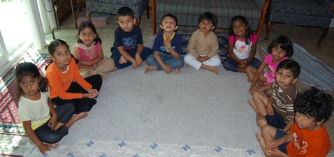
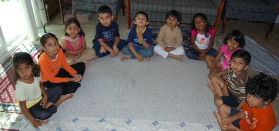

|
|
 


|
About Us |
Param Pujya Swami Tapovan Maharaj
Swami Tapovan Maharaj was that pristine glacier of Self-knowledge through whom flowed the Ganga of Vedantic Wisdom of Swami Chinmayananda,
the architect of the Chinmaya Movement.Swami Tapovanam was a saint of the highest order, a consummate Vedantin, strict teacher, a compassionate
mentor, and a poet whose every thought throbbed with ecstatic awareness, and a sage of unsurpassed wisdom and tranquillity.That Truth, which
Swami Tapovanam realized and indicated in all his teachings is beyond words, as much as he himself was. Swami Chinmayananda said of his Guru,
“He was a God without temple, a Veda without language”.
Pujya Gurudeva Swami Chinmayananda
Swami Chinmayananda (1916-1993),the founder of Chinmaya Mission was born in Cochin, India. Not satisfied with degrees in literature and law or with
other worldly aspirations, he pursued the spiritual path in the Himalayas under the guidance of Swami Shivananda and Swami Tapovanam.
He taught the logic of spirituality, while emphasizing the balance of head and heart. "Selfless work, study, and meditation are the cornerstones
of spiritual practice," he said. He is credited with the renaissance of spiritual and cultural values in India and with awakening the rest
of the world to the ageless wisdom of Vedanta.
His legacy remains in the form of books, audio and video tapes, schools, social service projects, more than 300 full-time Vedanta teachers whom
he taught and inspired, and more than 300 Chinmaya Mission centers around the world serving the spiritual and cultural needs of local communities.
Pujya Guruji Swami Tejomayananda
As the Spiritual Head of Chinmaya Mission centers worldwide, Swami Tejomayananda is fulfilling the vision that Swami Chinmayananda started. He oversees
spiritual, cultural, educational, and social service activities, which are so dear to Gurudeva. As he puts it, "I am not in Swamiji's shoes, I am at his
feet."Swami Tejomayananda completed the Vedanta studies at an early age of twenty, and was initiated into Samnyasa in 1983. He decided to dedicate his
life to spreading the teachings of Pujya Gurudeva.He excels in expounding upon a wide spectrum of Hindu scriptures - the Ramayana, the Bhagavad Gita,
the Bhagavatam, and the Upanisads. He conducts jnana yajna-s (lecture series) on Vedanta as he moves around the world at a bewildering pace.
His easy manner and devotional rendering of Vedantic texts has drawn many seekers into the spiritual fold. He is a master poet and composer who has
written stotras in Samskrt, poems in Marathi and Hindi, and composes his own music. He has written commentaries on several scriptural texts,
translated Gurudeva's commentaries on Srimad Bhagavad Gita into Hindi, and authored a number of books. His key contribution is, "Hindu Culture:
An introduction," a text acclaimed for its clear description of the basics of Hinduism and adopted as text in some American High Schools.